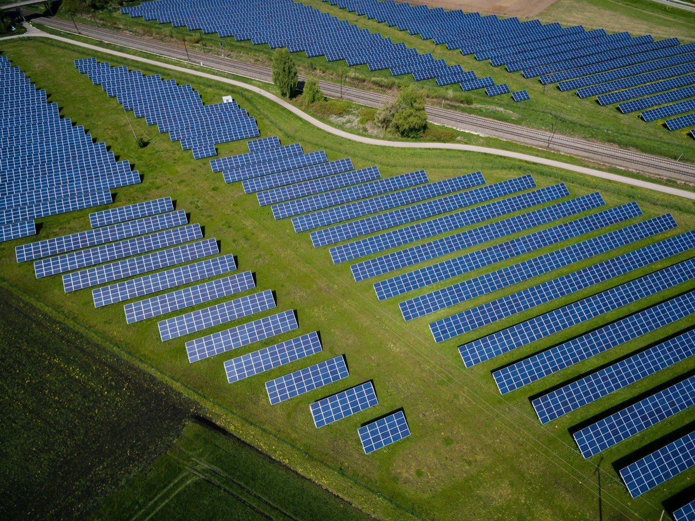
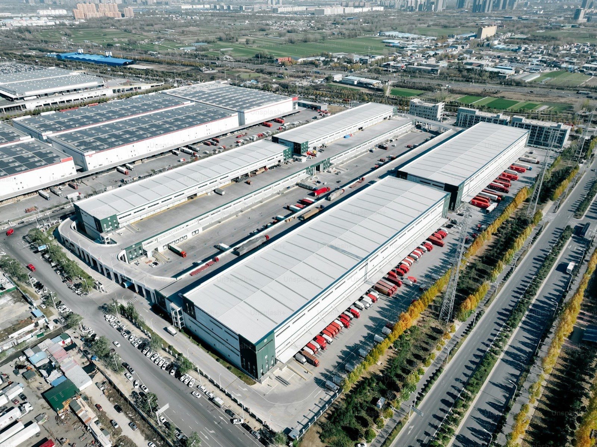
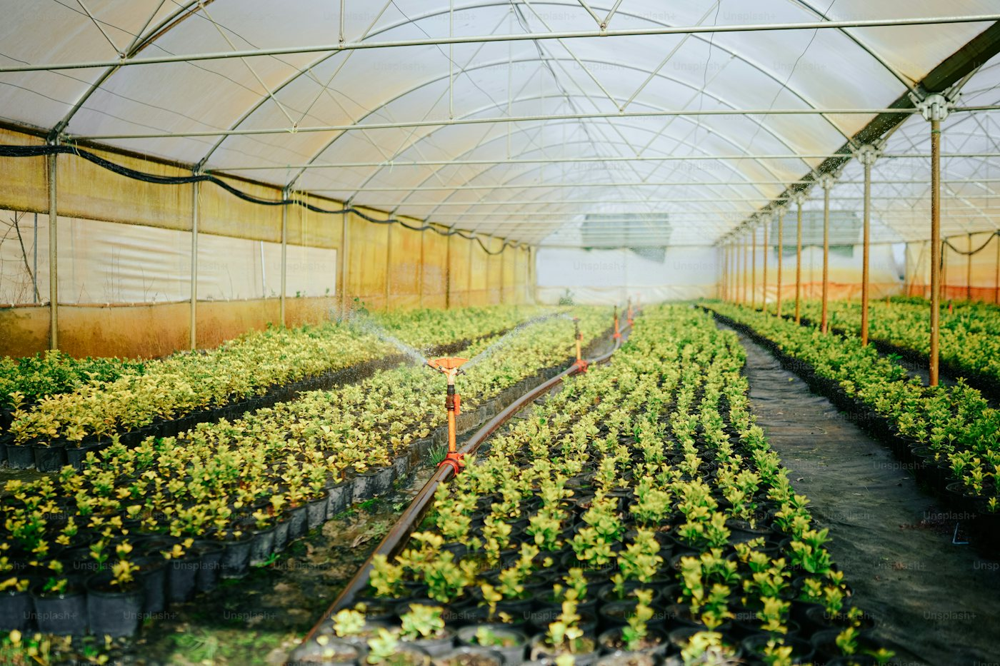
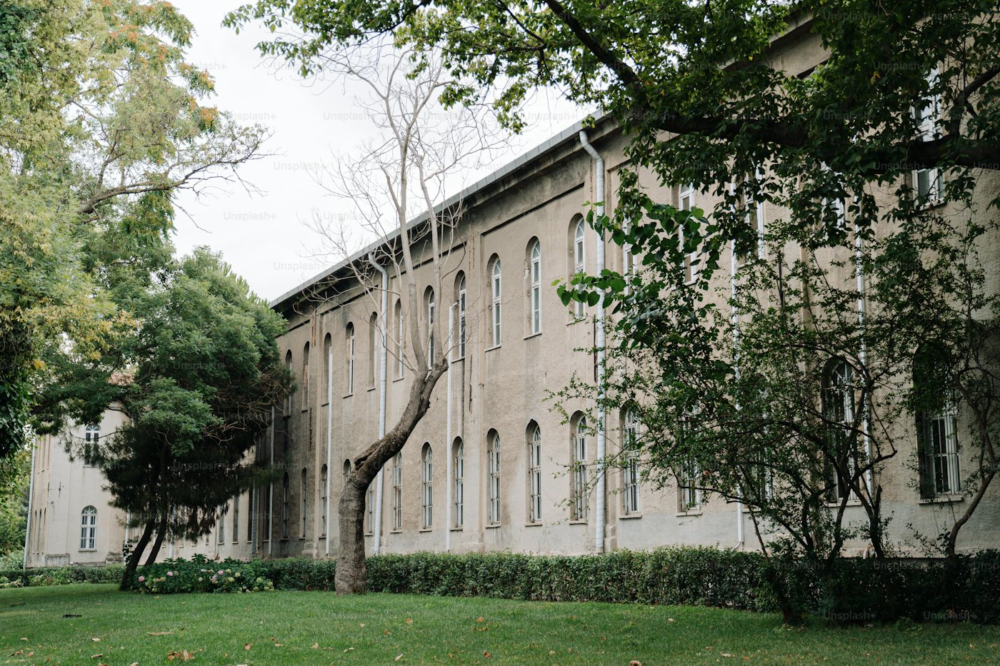
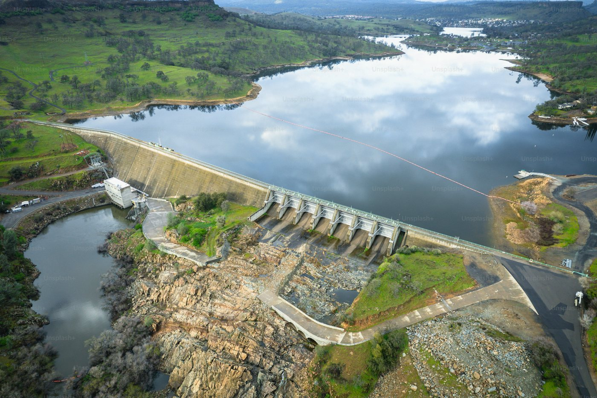
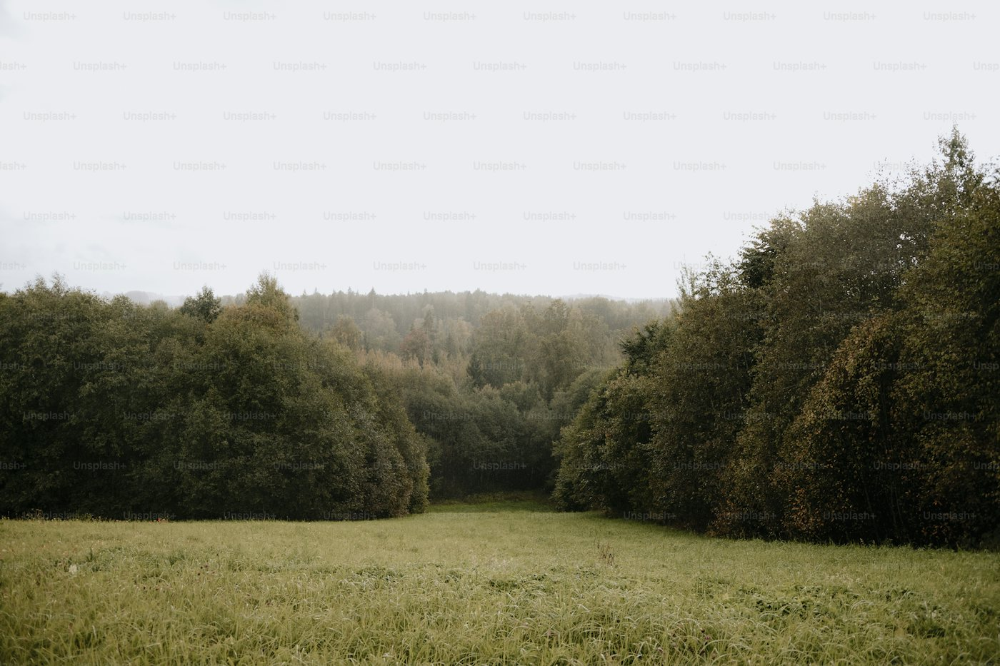

01 ─ PV Engineering
光電系統工程
從屋頂、地面到水面，把每一塊可用的空間，變成能穩定運轉二十年的發電資產。
Overview
太陽能案場的壽命以二十年計。真正決定報酬的，往往不是當下的每瓦單價，而是結構設計的裕度、線路的規劃方式，以及第幾年開始出現的維修成本。
我們以製造業的工程紀律處理每一個案場：結構依實際風壓與地震力計算、直流側配置預留後續擴充與檢修動線、所有隱蔽工程在封板前留下影像紀錄。
場勘到掛表單一窗口，不需要您自己當總包
結構、電氣、消防與行政申請由自有團隊整合
完工移交同時提供 IV 曲線基準值，做為後續維運比對依據
可搭配自建、屋頂租賃或合資等不同持有方式
What We Do
服務內容
-
 03
03統包施工 EPC
結構、支架、模組、電氣與防水工程統一承攬，單一責任窗口，避免介面爭議與責任三不管。

Specifications
系統規格
系統規格
與工程標準
以下為常見案型的設計基準。實際規格依場域條件、法規要求與業主需求調整。
可建置型態屋頂 / 地面 / 水面 / 農畜共生
單案建置規模100 kWp – 20MWp
模組技術N-type TOPCon 雙面雙玻
系統效率 PR 值≥ 80%
結構設計風速≥ 17級
逆變器型式組串式 / 集中式
工程施工保固10年
模組功率保固25年
Process
服務流程
-
01
場勘與資料蒐集
現場丈量、結構圖面檢視、歷史用電與日照資料蒐集，必要時安排結構技師複核。
-
02
方案設計與試算
完成系統配置、發電量模擬與 20 年現金流試算，比較不同持有方式的報酬與風險。
-
03
簽約與行政申請
同意備案、併聯審查與設備登記同步推進，申請期程與可能的卡關點會事先說明。
-
04
施工與進度回報
進場施工期間提供週進度與影像紀錄，隱蔽工程於封板前完成查驗。
-
05
測試、掛表與移交
完工測試、IV 曲線基準量測與文件移交，同時銜接後續維運與綠電去化安排。
Good Fit
這項服務適合這些對象
 工廠與廠房屋頂
工廠與廠房屋頂
物流倉儲中心
農業溫室與畜舍
學校與公有建築
滯洪池與埤塘水面
閒置土地與鹽業用地
不確定自己的條件適不適合？把現況資料給我們， 一次免費評估就能得到答案。